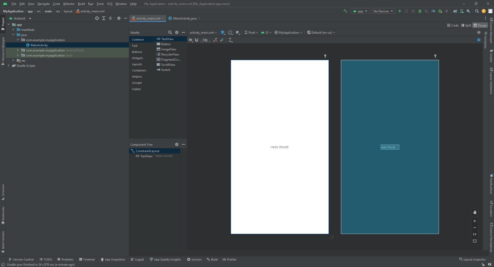

Produk

Visi : Menjadi perusahaan yang memberikan solusi total bagi pelaku bisnis di Indonesia.
Misi : BlueLake memberikan kemudahan bagi pelaku bisnis untuk mengelola bisnisnya secara effisien. Berusaha memahami kebutuhan konsumen, bukan hanya soal kertertarikan dan interaktif tetapi juga bagaimana cara membuat konsumen loyal kepada brand kita. Dan juga memberikan konsumen produk yang terbaik dan mudah terjangkau untuk meningkatkan bisnis yang mereka bangun.
PT. Blue Lake Indonesia didirikan oleh seorang pemuda bernama Tomi Sakyo Wiradi.Beliau mulai masuk di jenjang perkuliahan dan beliau memilih kuliah di universitas di negeri Jiran (Malaysia).Dari sinilah beliau mendapatkan pengalaman banyak, karena kegigihan dan semangat mewujudkan impiannya. Tomi melihat peluang teknologi informasi yang seharusnya dapat dirasakan oleh masyrakat Indonesia.Beberapa tahun kemudian beliau pulang ke indonesia. Dan membentuk sebuah perusahaan yaitu “BLUE LAKE INDONESIA”.
1. Pertama download android studio dan install pada computer.
2. Buka android studio
3. Setelah membuka android studio,buatlah new project dengan menekan tombol “New Project”
4. Setelah menekan “New Project” akan muncul Popup untuk memilih activity yang akan di pakai,pilihlah empty activity
5. Setelah memilih activity,akan muncul Popup dimana dapat memilih nama aplikasi,nama package, bahasa pemograman yang akan di pakai,lokasi dimana file akan di simpan dan minimum SDK yang akan digunakan,dan tekan “Next”.Setelah menekan “Next” akan membuka file activity_main.xml.
6. Akan disambut dengan tampilan dari activity_main.xml seperti dibawah ini
7. Kita dapat menghapus tulisan “Hello Wolrd” pada activity_main.xml.
8. Setelah itu kita dapat menambahkan option Text untuk membuat formulir login dan gunakan “Plain Text”

9. Setelah itu kita dapat mengganti nama dari “Plain Text” menjadi “Email” dan “Password” pada code,dengan merubah “android:text=”Name” menjadi email atau password.

10. Setelah itu kita akan dapat menambahkan Button di bawah semua text,lokasi Button berada di dalam palette “Buttons” dan kita dapat mengganti warna dengan cara merubah “android:backgroundTint=”(#warna yang di inginkan) dan gantilah text menjadi login dengan cara mengganti “android:text=”Login”.